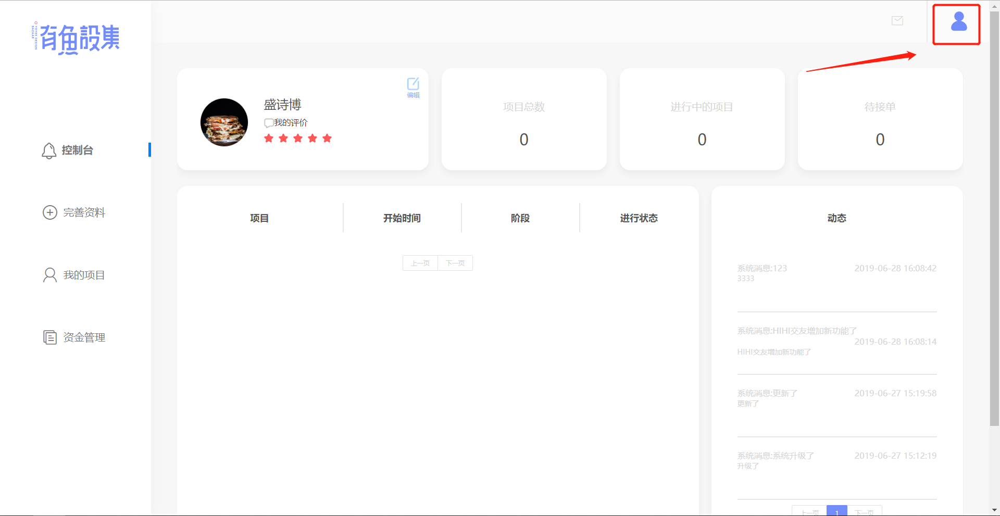
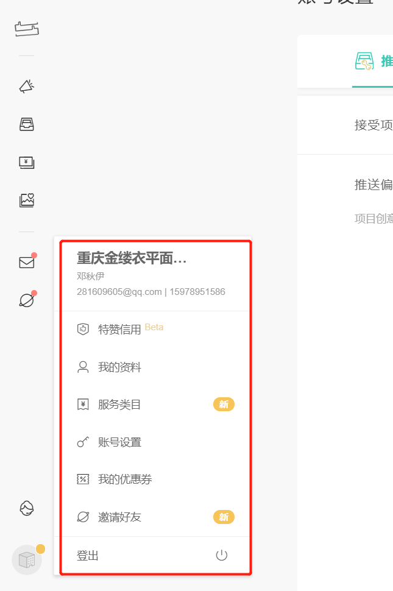
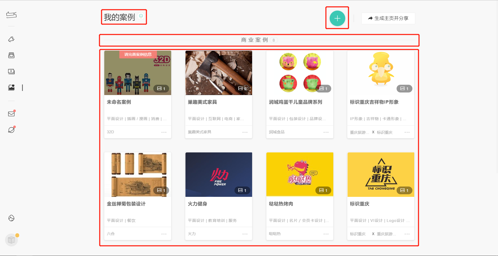
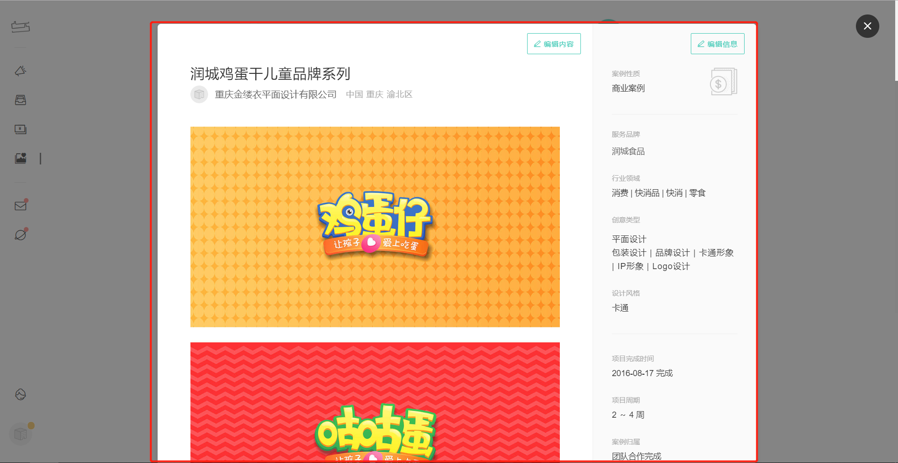
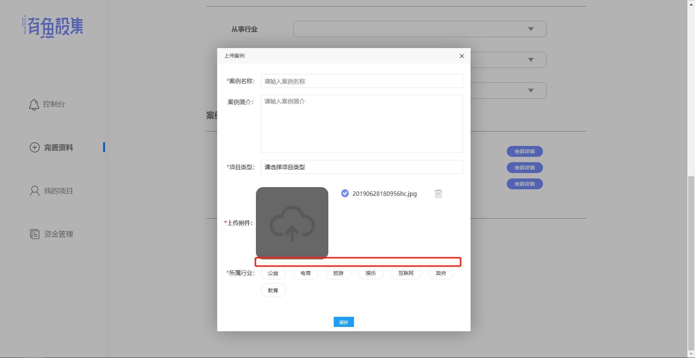

控制台页面
1. 右上角更变为用户的头像

2. 鼠标移入用户头像弹出下拉框、移出收回下拉框

3. 下拉框内容：我的资料、账号设置、登出
TAB 修改
1. 完善资料功能变为上面下拉框中的我的资料
2. 同时完善资料变成 我的案例

3. 每个案例要有图片、项目类型、案例名称
4. 点击每个案例可以查看、编辑、删除、类似下图的弹窗形式

5. 上传案例的话，需要在上传附件下方体现出上传的图片

6. 或者可以点击进去直接就是修改，同时在每个案例上有 删除按钮